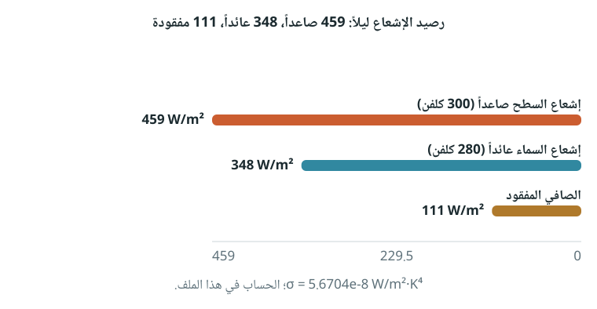

لماذا تبرد الصحراء بسرعة جنونية بعد الغروب؟
Why deserts cool so fast after sunset
سطح عند 300 كلفن يشعّ 459 واط/م²، والسماء الصافية عند 280 كلفن تعيد 348 — فالخسارة الصافية 111 واط/م² لا تُعوَّض بغياب السحاب وبخار الماء.
كل جسم يشعّ طاقة تتناسب مع الحرارة المطلقة مرفوعة للأس الرابع. سطح رمل عند 300 كلفن (27 مئوية) يشعّ 459 واط لكل متر مربع. لكنه يستقبل أيضاً إشعاعاً من السماء: غلاف جوي عند 280 كلفن يعيد نحو 348 واط/م². الصافي 111 واط/م² تُصرَف في كل لحظة بعد الغروب. في الصحراء لا سحاب ولا بخار ماء يزيدان الإشعاع العائد، ولا غطاء نباتي ولا مبانٍ تحتفظ بالحرارة، فالنتيجة هبوط سريع: 20 إلى 30 كلفناً في ساعات قليلة. في المدينة يعمل الإسفلت والخرسانة كمخزن حراري، ويعيد بخار الماء وبخار العوادم جزءاً من الإشعاع، فلا يبرد الليل بالقدر نفسه — وهذه ليست ملاحظة شعرية بل فرق في رصيد إشعاعي يُقاس.
الآلية
كيف يحدث الأمر على مستوى الجسيمات أو المتغيّرات المباشرة
الفقد الإشعاعي دالة قوية في الحرارة: مضاعفة الحرارة المطلقة تضاعف الإشعاع 16 مرة. وعند حرارة الأرض تكون الكتلة الهوائية وسيطاً شبه شفاف في نافذة 8–13 ميكرومتر، فتنفذ الطاقة إلى الفضاء. بخار الماء والغيوم تصطاد جزءاً من هذه النافذة فترتد الطاقة إلى السطح، ولهذا تكون ليالي الشتاء الغائمة أدفأ من الصافية بنفس الحرارة.
الأرقام والوحدات
العلاقات والوحدات والنطاقات العددية التي تسند الشرح
بحسب ستيفان-بولتزمان: E = σT⁴، و σ = 5.6704e-8. عند 300 كلفن: 459.3 واط/م². عند 280 كلفن: 348.5. الصافي 110.8 واط/م². لو أضفنا غطاءً سحابياً يرفع حرارة السماء الفعّالة إلى 295 كلفن لصار الإشعاع العائد 428 واط/م² وانخفض الصافي إلى 31 واط/م² — أي ربع الفقد.
الفرق الدقيق
المفهوم الملتبس الذي يُخلَط به، وأين ينفصلان
الإشعاع لا يحتاج هواءً بارداً لينتقل؛ السطح يبرد بالرغم من أن الهواء فوقه قد يكون أدفأ. من يقيس حرارة الهواء فقط قد يفوته أن السطح نفسه أبرد بدرجات، ولهذا تتكوّن طبقة صقيع على الرمل والزجاج بينما يبقى مقياس الهواء فوق الصفر.
حدود التعريف
أين ينكسر التعريف أو النموذج وما الذي لا يفسّره
الحساب يفترض سطحاً أسود مثالياً وانبعاثية 1. الأجسام الحقيقية أقل انبعاثية؛ الرمل نحو 0.9، والمعادن المصقولة أقل بكثير. ولا يدخل الحساب الحمل الذي يعيد بعض الحرارة من الهواء الدافئ، ولا التوصيل من عمق التربة — وهما يجعلان الهبوط الفعلي أقل من 111 واط/م² وحدها.

| الكمية | القيمة | المصدر |
|---|---|---|
| إشعاع سطح عند 300 كلفن | 459 W/m² | [1] |
| إشعاع سماء صافية فعّالة عند 280 كلفن | 348 W/m² | [1] |
| الخسارة الإشعاعية الصافية | 111 W/m² | [1] |
المصادر
- 1 OpenStax, College Physics 2e — Radiation — OpenStax. openstax.org/books/college-physics-2e/pages/14-7-radiation · اطُّلع عليه 2026-11-16
- 2 OpenStax, College Physics 2e — Heat Transfer Methods — OpenStax. openstax.org/books/college-physics-2e/pages/14-4-heat-transfer-methods · اطُّلع عليه 2026-11-16
راجعه: مراجعة آلية — ديوان المعرفة (أرقام محسوبة + مصادر متحققة) 2026-11-16 · 2026-11-16 · آخر تحديث 2026-11-16